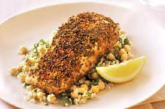

Moroccan Salmon

Super Healthy and easy
A healthy delicious recipe for Moroccan Salmon, seared in a pan with simple spices you probably have on hand. Easy, FAST and oh so tasty!
Ingredients
- 2 salmon fillets
- 1/2 cup couscous
- 2 tbsp harissa paste
- 1/2 cup sun dried tomatoe
- 1/4 cup parsley
Steps
- Coat the salmon with prepared harissa sauce and a drizzle of olive oil. Season with salt and pepper. Set aside to marinate.
- While the salmon is marinating, cook or soak the couscous according to package instructions.
- Once the couscous has absorbed all the water. Fluff with a fork, like rice.
- Add most of the chopped or sliced sun-dried tomatoes and chopped parsley to the couscous. Add a drizzle of olive oil. Season with salt and pepper. Stir to combine.
- Heat a drizzle of oil in a pan over medium heat. Add the salmon and cook for 3-4 minutes on each side, or until cooked through.
- Serve the salmon over the couscous garnish with ramaining sun-dried tomatoes and parsley leaves. Dinner time!